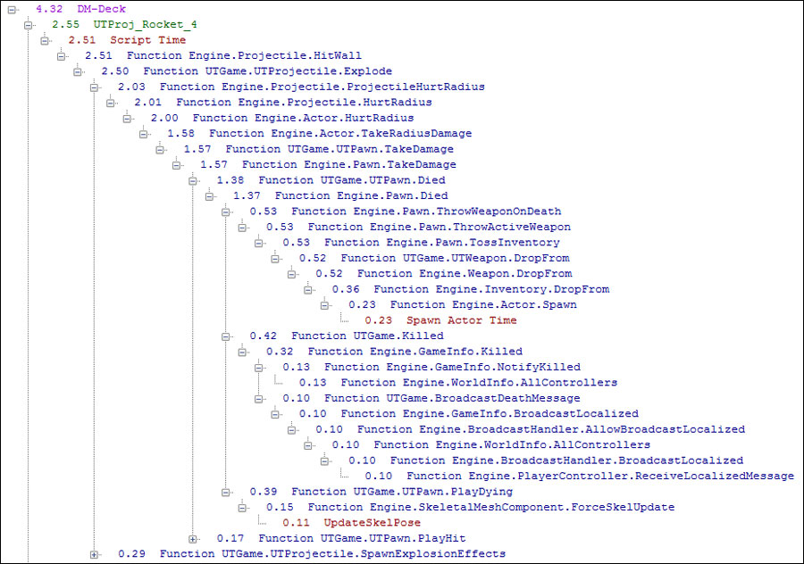
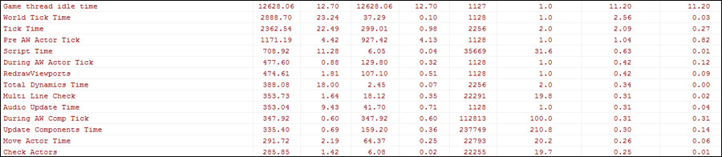
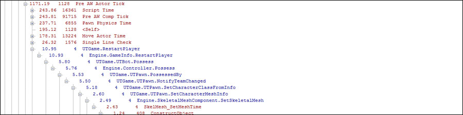

UDN
Search public documentation:
GameplayPerformanceOptimizationJP
English Translation
中国翻译
한국어
Interested in the Unreal Engine?
Visit the Unreal Technology site.
Looking for jobs and company info?
Check out the Epic games site.
Questions about support via UDN?
Contact the UDN Staff
中国翻译
한국어
Interested in the Unreal Engine?
Visit the Unreal Technology site.
Looking for jobs and company info?
Check out the Epic games site.
Questions about support via UDN?
Contact the UDN Staff
UE3ホーム > パフォーマンス、プロファイリング、最適化 > ゲームプレイプログラマーのためのパフォーマンス最適化方法
UE3 ホーム > ゲームプレイプログラミング > ゲームプレイプログラマーのためのパフォーマンス最適化方法
UE3 ホーム > ゲームプレイプログラミング > ゲームプレイプログラマーのためのパフォーマンス最適化方法
ゲームプレイプログラマーのためのパフォーマンス最適化方法
概要
広域なパフォーマンス調査
STAT UNIT から流しを開始して、ゲーム、レンダリング、GPUが遅い箇所を見つけます。この操作は可能であれば テスト ビルド上で行ってください。GPUの処理時間がわからない場合もありますが、ゲームやレンダリングに要する処理時間よりも長くかかるのであれば、合計フレーム時間と同等であると想定できます。QAチームにレポートを作成してもらい、関係者間で共有するととても有益です。レポートに含むと役立つ情報は以下の通りです。
- Average FPS (平均フレームレート) － 時としてシネマティックや対話的でないセクションを除外した、生の平均fpsです。 測定した平均フレームレートがvsync (平均30回) よりも多い場合はこの生データはさほど重要ではありませんが、傾向を追跡する際に便利な情報です。
- % over 30 (30fps以上のパーセンテージ) － 測定中に30fps以上となった回数です。 数値が高ければ高いほどよく、一般的に95％かそれ以上を目標とします。
- Total Hitches (処理落ちの合計数) － 処理に100ms以上かかるフレーム数です。数値は少なければ少ないほど良いとされます。
- % Bound by Game and Render (ゲームとレンダリングに起因するパーセンテージ) － ゲームやレンダリングによって遅いフレームが発生した回数です。 回数が0ではない場合、原因の調査をお勧めします。GPUが起因となるパーセンテージは通常はわかりませんが、ゲームやレンダリングに要する処理時間が起因となる場合の数値が低く、30fps以上のパーセンテージも低い場合、GPUに起因するパーセンテージが高いことがおそらくの原因と考えられます。
ゲームとレンダリングのパフォーマンス
.gprof 」ファイルのディレクトリ、StatsViewer用に「 .ustats 」ファイルのディレクトリが作成されます。適切なツールでファイルを開いて使用してください（通常はダブルクリックで開けますが、場合によっては関連付けが必要かもしれません）。
ゲームスレッドのプロファイリング
「.gprof 」ファイルを開き、Gameplay Profilerを使って問題を探してください。探し方のひとつに、グラフの上に表示されている遅いフレームを、個別にドリルダウン形式で探す方法があります。遅いフレームをクリックして、 [ Frame Actor / Class Call ] のグラフタブと [ Frame Function ] のタブを調べてください。赤字はSTAT情報で、緑はスクリプトコールとティック時間です。

タブを使うことによって、呼び出しの遅い関数の特定、ティックの遅いアクタやアクタのクラスの特定ができます。アクタティックやスクリプト関数が遅い原因ではなさそうな時、 [ Frame Function Summary ] タブを覗いてどのStatコールに時間がかかっているのか、そのStatが階層のどこで呼ばれているかフレーム関数のコールグラフで見つけてください。遅いStatを見つけたら文字列が挿入されているソースを探して、そのStatを使ってStatやコードを見つけてください。 ヒントのきっかけになる場合もありますが、エンジンチームからのヘルプが必要となる可能性もあります。 その他の最適化に適した方法として、初めから終わりまで処理が遅い関数の総体的な最適化をはかることです。 [ Aggr function summary ] や [ Aggr function summary ] ビューの使用が有益です。

個別のStatや関数を選択して、上記グラフの赤字に示す処理の遅いフレームを明らかにします。 Exclusive time でソートをすると実用的ですが、全てのティックを含む World Tick time が最も有益です。 グラフでスパイクがあるフレームとその部分を見つけたら、ドリルダウン形式で、そのフレームのStatや関数の処理を遅くしている原因を突き止めます。レンダリングスレッドのプロファイリング
[StatsViwer] でレンダリングスレッド、マイナスティック、スクリプト時間に関する類似情報が得られます。 「.ustatファイル」 を開くと、画面右側にグラフ、左側にフィルターのセットが表示されます。個々のstatを見たい場合は、statを選択してグラフを表示することで、個々のフレームを簡単に掘り下げていくことができます。フレームの右側を右クリックして、 Open call graph を選択してください。 この方法で特定のフレームのドリルダウンが可能となり、パフォーマンス問題を特定し赤字で表示します。要因が特定出来たら、グラフに追加して問題を起こしている頻度を確かめてください。共通のパフォーマンス問題
- Platform specific issues (プラットフォームに特化した問題) － STAT時間が長い場合や、詳細が明確でない際に現れがちな問題です。 シェーダーコンパイル、オーディオ問題、 メモリ遅延の問題なども含みます。 処理の遅延を示すStatを特定出来たら、プラットフォーム特有のネイティブプロファイラを使用するか、エンジンチームより更なるヘルプを受けてください。
- Script call overhead (スクリプトコールオーバーヘッド) － これは比較的早くGameplay Profilerに表示され、ゲームプレイのロジックの調整や、特定された問題の関数をネイティブへ移動するなどして、簡単に修正が出来ます。
- GC Time (GC時間) － GC Mark や GC Sweep は、ゲームプレイの [Profiler] や [Stat]ビューアーに、定期的に起こる大きな遅延としてしばし表示されます。
NoVerifyGCを使用していないリリースバージョンで実行された場合、問題は更に大きくなりますので最初にご確認ください。この問題を完全に解決することは不可能で、GCableオブジェクト数を最適化することが主なゴールです。 より多くのオブジェクトをスタートアップパッケージへ移動することや、オブジェクト数を減らすことも目標にしてください。 - Pathfinding and line checks (パスファインドとラインチェック) － パスファインドコールとラインチェックはしばしゲームスレッドに遅れを生じます。 最適化を図る最も簡単な方法は、負荷をかけないことです。重複するパスファインドとラインチェックが、ゲームプレイのコーディングに存在するかチェックをしましょう。
- DLE Tick time (DLE Tickタイム) － 動的ライト環境のTickタイムは、ある特定のシーン上でしばしかなり長くなります。 DLEを必要とするオブジェクトのみに使用されていることを確認してください。また、アクタが置かれた動的ライトを必要としない
bDynamicをアンセットしてください。 モバイル環境ではlightmassのライトの動的コンポジットフラグ（動的オブジェクトの動的コンポジットフラグではありませんので気を付けてください）を無効にするなど、強引な最適化が必要かもしれません。 - Particle Time (パーティクルタイム) － 個々のパーティクルシステムは、しばしティックに大きな負荷がかかります。Gameplay Profilerからパーティクルシステムを割り出して、アーティストに最適化を頼むことが出来ます。 または、数個のパーティクルをスポーンするように、ゲームプレイのロジックを変えることも出来ます。例えばある攻撃シーンで10人の敵が殺される場面を、フレーム内で殺された最初の二人のみのデスパーティクルがスポーンされるように変更するなどです。 Update Bounds time はパーティクルシステムが必要な固定範囲を表し、DLEの更新時間は必要ではない可能性のあるライトの照らし時間を表示します。これはコンテンツやゲームに大変特徴的です。詳細は ParticleTickStats を参照してください。 レンダリングスレッドに、 Particle update time のパーティクルが数多く現れるかもしれませが、LODまたはカリングでパーティクル数を修正してください。
- Death and Explosion (デスと爆発) － デスと爆発は多くの理由から処理が遅くなりがちです。 コンポーネントのアップデート、パーティクルのスポーン、一部のロジックやAIのアップデートなどが理由です。エレメントのいくつかを次のフレームへ延期、もしくは多くのデスが一度に起こっている場合、まとめて削除するのも方法の一つです。
- Component Update time (コンポーネントの更新時間) － スケルタルメッシュなど、コンポーネントによっては更新に長時間を要する場合もあります。 コンポーネントタイプを検討することにより、コンポーネントタイプの簡素化が可能かもしれません（100個の スタティックメッシュから構成される頂点アニメーションは、100個のスケルタルメッシュよりも、俄然負荷が低くなります）
- Interp actor update time (Interpアクタ更新時間) － Interp actorはDLE timeもmovement timeも、更新にかなりの負荷がかかります。一般的な修正方法のひとつに、レベルデザイナーによって「don’t encroach」とnon-gameplayオブジェクトにマークしてもうことです。これによってスローコリジョンチェックを回避できます。
- Transparency Drawing (描画の透過処理) － 透過処理がされたオブジェクト特にパーティクルは、レンダリングにかなり時間がかかることがしばしばあります。担当アーティストに、透過処理されたオブジェクトがたくさん重なりあっていないこと、積極的にオブジェクトの透過処理をLODアウトしないよう確認してください。
- Too Much Staff (ごちゃごちゃとしたデザイン) － 一般的にアーティストとレベルデザイナーは、ゲームに多くのものを描き込む傾向があります。多くの敵（>10）や多数のメッシュの可視化は負荷がかかり、コンテンツ側で最適化が必要となります。